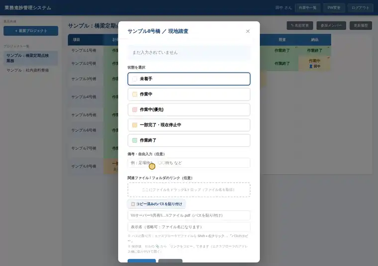

B-1進捗管理
業務進捗管理システム
橋ごと・工程ごとの進み具合を、複数人がブラウザで同時に更新できる進捗表です。
- 困りごと
- 紙で進捗を管理していて、更新されないまま古い情報が残っていることが多かった。
- 工夫
- 状態を色で示し、誰がいつ更新したかを自動で記録。職場の環境に合わせて選べるよう、社内LAN版とGoogle版を用意した。
- 成果
- 更新したその場で、約15秒後には全員の画面に反映。誰がいつ更新したかも残る。
- 状態は4色（作業中＝黄、優先＝赤、一時停止＝橙、完了＝緑）。更新の履歴を後から確認できる
- 行・列の見出しを入れたExcelを読み込むだけで表ができる
- 利用者登録は承認制、プロジェクトごとに参加者を制限
社内LAN版社内PC 1台をサーバーにして動かす。インターネットに出さずに使える。
Google版Googleドライブ上で動く。サーバーPC不要で、スマホからも使える。
